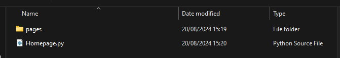

23 Multipage Apps
As your apps become more complex, you are likely to find yourself wanting to split the app across multiple pages.
As Streamlit has evolved, this has become a native part of the framework.
In the early days of Streamlit, people came up with various creative workarounds, so you are likely to still encounter these when searching for information relating to multi-page apps in Streamlit on the web.
Information prior to 2022 is likely to be from before Streamlit supported this natively, so is not likely to be as relevant.
23.2 Method 2: ‘pages’ subfolder
One other common way to deal with multipage apps is to have a .py file that is designed to be your main homepage, with all other pages being stored within a ‘pages’ subfolder.
At the time of writing, this is still used in some examples in the Streamlit documentation, so it is useful to be aware of, and it does have the benefit of being an automated way
The subfolder has to be called pages to be picked up! You cannot rename it to something else.
We would start this app by running streamlit run Homepage.py when we have navigated to the same folder level as Homepage.py in our terminal.
Let’s look at an example multipage app with 5 pages.
The structure of our app in our filesystem looks like this; in Windows explorer, this is how the files and folders appear.

The ‘pages’ folder

The numbers at the beginning of the filenames indicate the order these will appear in the sidebar.
import streamlit as st
st.set_page_config(layout="wide", page_title="Homepage")
st.title("Welcome to the penguin app!")
species_options = ["Gentoo", "Chinstrap", "Adelie"]
chosen_species = st.selectbox("Which penguin species are you interested in finding out more about?", species_options)
if chosen_species == "Gentoo":
st.write(
"""
The gentoo penguin (JEN-too) (Pygoscelis papua) is a penguin species (or possibly a species complex) in the genus Pygoscelis, most closely related to the Adélie penguin (P. adeliae) and the chinstrap penguin (P. antarcticus). The earliest scientific description was made in 1781 by Johann Reinhold Forster with a type locality in the Falkland Islands. The species calls in a variety of ways, but the most frequently heard is a loud trumpeting, which the bird emits with its head thrown back.
"""
)
elif chosen_species == "Chinstrap":
st.write(
"""
The chinstrap penguin (Pygoscelis antarcticus) is a species of penguin that inhabits a variety of islands and shores in the Southern Pacific and the Antarctic Oceans. Its name stems from the narrow black band under its head, which makes it appear as if it were wearing a black helmet, making it easy to identify.[2] Other common names include ringed penguin, bearded penguin, and stonecracker penguin, due to its loud, harsh call.[3]
"""
)
elif chosen_species == "Adelie":
st.write(
"""
The Adélie penguin (Pygoscelis adeliae) is a species of penguin common along the entire coast of the Antarctic continent, which is the only place where it is found. It is the most widespread penguin species, and, along with the emperor penguin, is the most southerly distributed of all penguins. It is named after Adélie Land, in turn, named for Adèle Dumont d'Urville, who was married to French explorer Jules Dumont d'Urville, who first discovered this penguin in 1840. Adélie penguins obtain their food by both predation and foraging, with a diet of mainly krill and fish.
"""
)
st.markdown("*All information from wikipedia*")import streamlit as st
st.write("Let's try loading in a variable from the previous page.")
with st.expander("Click here to see the code that made the homepage"):
st.code("""
import streamlit as st
st.set_page_config(layout="wide", page_title="Homepage")
st.title("Welcome to the penguin app!")
species_options = ["Gentoo", "Chinstrap", "Adelie"]
chosen_species = st.selectbox("Which penguin species are you interested in finding out more about?", species_options)
if chosen_species == "Gentoo":
st.write(
'''
The gentoo penguin (JEN-too) (Pygoscelis papua) is a penguin species (or possibly a species complex) in the genus Pygoscelis, most closely related to the Adélie penguin (P. adeliae) and the chinstrap penguin (P. antarcticus). The earliest scientific description was made in 1781 by Johann Reinhold Forster with a type locality in the Falkland Islands. The species calls in a variety of ways, but the most frequently heard is a loud trumpeting, which the bird emits with its head thrown back.
'''
)
elif chosen_species == "Chinstrap":
st.write(
'''
The chinstrap penguin (Pygoscelis antarcticus) is a species of penguin that inhabits a variety of islands and shores in the Southern Pacific and the Antarctic Oceans. Its name stems from the narrow black band under its head, which makes it appear as if it were wearing a black helmet, making it easy to identify.[2] Other common names include ringed penguin, bearded penguin, and stonecracker penguin, due to its loud, harsh call.[3]
'''
)
elif chosen_species == "Adelie":
st.write(
'''
The Adélie penguin (Pygoscelis adeliae) is a species of penguin common along the entire coast of the Antarctic continent, which is the only place where it is found. It is the most widespread penguin species, and, along with the emperor penguin, is the most southerly distributed of all penguins. It is named after Adélie Land, in turn, named for Adèle Dumont d'Urville, who was married to French explorer Jules Dumont d'Urville, who first discovered this penguin in 1840. Adélie penguins obtain their food by both predation and foraging, with a diet of mainly krill and fish.
'''
)
st.markdown("*All information from wikipedia*")
""")
st.write("We're going to try loading the `species_options` list in, which just contains the strings 'Gentoo', 'Adelie' and 'Chinstrap'.")
st.write("What we'll see is that it doesn't work and instead returns an error. This is because the variables on the other pages are completely separate and can't be accessed on this page.")
st.write("This is a key thing to be aware of within multipage apps. Without using things like session state, we can't use information from other pages on this page, and vice-versa")
chosen_species = st.selectbox("Which penguin species are you interested in finding out more about?", species_options)import streamlit as st
import streamlit as st
from palmerpenguins import load_penguins
import plotly.express as px
st.write("All of the things we've learned about so far can be used within a multipage app!")
st.write("Just remember that each page is effectively a self-contained app - without using things like session state, we can't use information from other pages on this page, and vice-versa.")
tab1, tab2 = st.tabs(["Penguin Graphs", "Video"])
penguins = load_penguins()
with tab1:
col1, col2 = st.columns(2)
with col1:
fig = px.scatter(penguins, x='bill_length_mm', y='bill_depth_mm', color="sex",
title=f"Penguins Dataset - Bill Length (mm) vs Bill Depth (mm), coloured by Sex")
st.plotly_chart(fig)
with st.expander("Click here to see the code for the graph"):
st.code(
"""
fig = px.scatter(penguins, x='bill_length_mm', y='bill_depth_mm', color="sex",
title=f"Penguins Dataset - Bill Length (mm) vs Bill Depth (mm), coloured by Sex")
"""
)
with col2:
fig = px.scatter(penguins, x='flipper_length_mm', y='body_mass_g', color="species",
title=f"Penguins Dataset - Flipper Length (mm) vs Body Weight(g), coloured by Species")
st.plotly_chart(fig)
with st.expander("Click here to see the code for the graph"):
st.code(
"""
fig = px.scatter(penguins, x='flipper_length_mm', y='body_mass_g', color="species",
title=f"Penguins Dataset - Flipper Length (mm) vs Body Weight(g), coloured by Species")
"""
)
with st.expander("Click here to see the underlying data"):
st.dataframe(penguins)
with tab2:
st.header("Penguin Video")
expander_video = st.expander("Click here to watch a penguin video")
expander_video.video("https://www.youtube.com/watch?v=nFAK8Vj62WM")import streamlit as st
from palmerpenguins import load_penguins
import plotly.express as px
st.title("Interactive Data Explorer")
st.write("Here, let's explore what happens to values we've input when moving to a different page.")
st.write("If you enter your name on this page, the rest of the page will load.")
st.write("Try then moving to a different page using the navigation sidebar before returning to this page.")
st.write("What do you notice?")
user_name = st.text_input("Enter Your Name", None)
if user_name is None:
st.write(f"Please enter your name to load the rest of the page")
else:
st.write(f"Welcome to the interactive penguin data explorer, {user_name}!")
penguins = load_penguins()
axis_options = ['bill_length_mm', 'bill_depth_mm',
'flipper_length_mm', 'body_mass_g']
col_1 = st.selectbox("Select the column to use for the x axis", axis_options)
axis_options.remove(col_1)
col_2 = st.selectbox("Select the column to use for the x axis", axis_options)
color_factor = st.selectbox("Select the column to colour the chart by",
["species", "sex", "island"])
fig = px.scatter(penguins, x=col_1, y=col_2, color=color_factor,
title=f"Penguins Dataset - {col_1} vs {col_2}, coloured by {color_factor}")
st.plotly_chart(fig)import streamlit as st
import plotly.express as px
st.markdown(
"""
<style>
/* Sidebar font color as default is to set non-selected to more transparent */
[data-testid=stSidebarNavItems] > li > div > a > span
{
color: #05291F;
}
/* Sidebar font size */
[data-testid=stSidebarNavItems]
{
font-size: 20px;
}
</style>
""",
unsafe_allow_html=True
)
st.title("Sidebar Theming and Additions")
st.write("Finally, let's look at the impact of some custom CSS on the sidebar.")
st.write("We've embedded some code when the page first loads that should increase the size of the page names in the sidebar, and also make the page names in the sidebar darker.")
with st.expander("Click here to view the code"):
st.code(
'''
<style>
/* Sidebar font color as default is to set non-selected to more transparent */
[data-testid=stSidebarNavItems] > li > div > a > span
{
color: #05291F;
}
/* Sidebar font size */
[data-testid=stSidebarNavItems]
{
font-size: 20px;
}
</style>
'''
)
with st.sidebar:
st.write("Let's also explore what happens when we add additional things to the sidebar")
st.write("It looks like it automatically appears below the navigation")
num_repeats = st.slider("Pick a number", 1, 50, 2)
text_repeats = st.text_input("Enter some text", None)
if text_repeats is None:
st.write("Enter some text in the box in the sidebar")
else:
st.write("Here is your text repeated that many times!")
st.write(text_repeats * num_repeats)